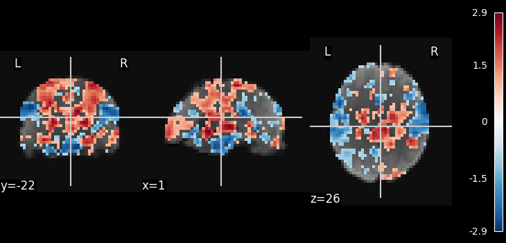
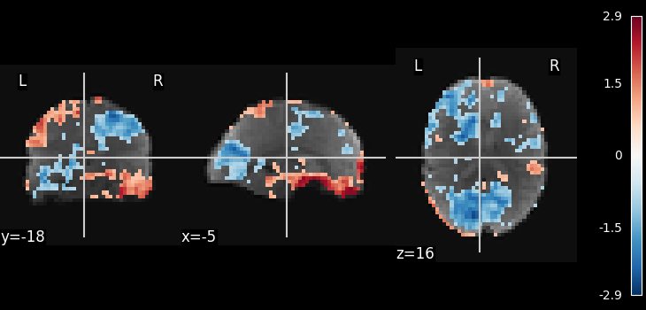

Note
Click here to download the full example code or to run this example in your browser via Binder
9.8.1. Multivariate decompositions: Independent component analysis of fMRI¶
This example is meant to demonstrate nilearn as a low-level tools used to combine feature extraction with a multivariate decomposition algorithm for movie-watching.
This example is a toy. To apply ICA to fmri timeseries data, it is advised to look at the example Deriving spatial maps from group fMRI data using ICA and Dictionary Learning.
The example here applies the scikit-learn ICA to movie watching timeseries data. Note that following the code in the example, any unsupervised decomposition model, or other latent-factor models, can be applied to the data, as the scikit-learn API enables to exchange them as almost black box (though the relevant parameter for brain maps might no longer be given by a call to fit_transform).
Note
If you are using Nilearn with a version older than 0.9.0,
then you should either upgrade your version or import maskers
from the input_data module instead of the maskers module.
That is, you should manually replace in the following example all occurrences of:
from nilearn.maskers import NiftiMasker
with:
from nilearn.input_data import NiftiMasker
Load movie watching dataset
from nilearn import datasets
# Here we use only single subject to get faster-running code.
dataset = datasets.fetch_development_fmri(n_subjects=1)
func_filename = dataset.func[0]
# print basic information on the dataset
print('First subject functional nifti image (4D) is at: %s' %
dataset.func[0]) # 4D data
Out:
First subject functional nifti image (4D) is at: /home/circleci/nilearn_data/development_fmri/development_fmri/sub-pixar123_task-pixar_space-MNI152NLin2009cAsym_desc-preproc_bold.nii.gz
Preprocess
from nilearn.maskers import NiftiMasker
# This is fmri timeseries data: the background has not been removed yet,
# thus we need to use mask_strategy='epi' to compute the mask from the
# EPI images
masker = NiftiMasker(smoothing_fwhm=8, memory='nilearn_cache', memory_level=1,
mask_strategy='epi', standardize=True)
data_masked = masker.fit_transform(func_filename)
Apply ICA
from sklearn.decomposition import FastICA
n_components = 10
ica = FastICA(n_components=n_components, random_state=42)
components_masked = ica.fit_transform(data_masked.T).T
# Normalize estimated components, for thresholding to make sense
components_masked -= components_masked.mean(axis=0)
components_masked /= components_masked.std(axis=0)
# Threshold
import numpy as np
components_masked[np.abs(components_masked) < .8] = 0
# Now invert the masking operation, going back to a full 3D
# representation
component_img = masker.inverse_transform(components_masked)
Out:
/home/circleci/miniconda3/envs/testenv/lib/python3.8/site-packages/sklearn/decomposition/_fastica.py:488: FutureWarning:
From version 1.3 whiten='unit-variance' will be used by default.
/home/circleci/miniconda3/envs/testenv/lib/python3.8/site-packages/sklearn/decomposition/_fastica.py:120: ConvergenceWarning:
FastICA did not converge. Consider increasing tolerance or the maximum number of iterations.
Visualize the results
# Show some interesting components
from nilearn import image
from nilearn.plotting import plot_stat_map, show
# Use the mean as a background
mean_img = image.mean_img(func_filename)
plot_stat_map(image.index_img(component_img, 0), mean_img)
plot_stat_map(image.index_img(component_img, 1), mean_img)
show()
- 
- 
Total running time of the script: ( 0 minutes 5.313 seconds)
Estimated memory usage: 282 MB